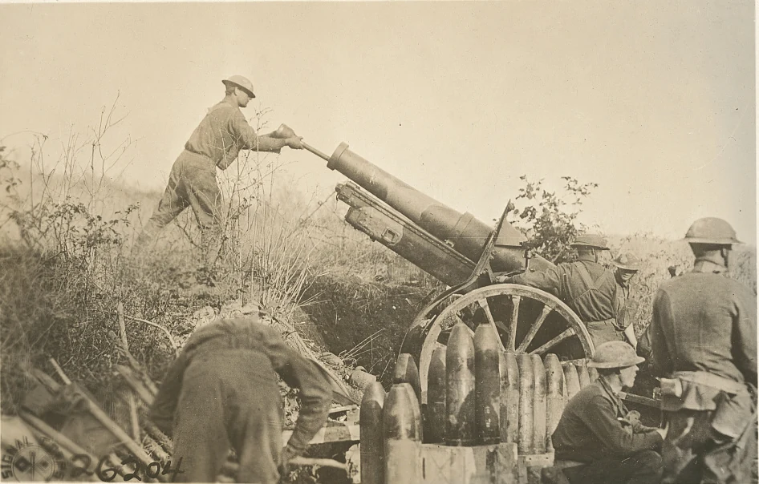

Independent historical directory. The appearance of U.S. Department of War (DoW) visual information does not imply or constitute DoW endorsement.
× The visual archive
Images across the eras. Historical photographs, artworks and national/service flags from documented sources. Each selected image has a documented public-domain basis in the United States. Historical images illustrate broad eras; they are not evidence of the selected year or engagement. Service flags identify the six branches of the armed forces. Artwork dates and depicted events are identified separately below.
Public domain in the United States / CC0
Washington Crossing the Delaware Washington Crossing the Delaware — Emanuel Leutze, 1851, depicting the 1776 crossing.
Emanuel Leutze (artist). The Metropolitan Museum of Art, Gift of John Stewart Kennedy, 1897, 97.34. Public domain / CC0.
Archive record ↗ Rights information ↗
Public domain in the United States
Battle of Gettysburg Hancock along the Union line at Gettysburg — an 1887 print after Thure de Thulstrup.
Thure de Thulstrup (underlying painting); L. Prang & Co. (print publisher). Library of Congress, Prints & Photographs Division, LC-DIG-pga-04033. L. Prang & Co., after Thure de Thulstrup.
Archive record ↗ Rights information ↗

Public domain in the United States
American 155-mm artillery near Samogneux American 155-mm artillery near Samogneux, France, 1918.
U.S. Army Signal Corps; individual photographer not named. U.S. Army Signal Corps / Library of Congress, Prints & Photographs Division, LC-DIG-ppmsca-40789.
The official A.E.F. catalogue caption gives October 10, 1918; the Library of Congress’s broader date field reads “1917 or 1918.”
Archive record ↗ Rights information ↗
Public domain in the United States
An M-3 tank in action, Fort Knox M-3 tank training at Fort Knox, Kentucky, June 1942.
Alfred T. Palmer, U.S. Office of War Information photographer. Alfred T. Palmer / Library of Congress, Prints & Photographs Division, FSA-OWI Collection, LC-DIG-fsac-1a35203.
Archive record ↗ Rights information ↗
Public domain in the United States
UH-1D helicopters during Operation Wahiawa Army UH-1D helicopters airlift 2nd Battalion, 14th Infantry soldiers near Cu Chi, South Vietnam, during Operation Wahiawa, May 16, 1966.
SFC James K. F. Dung / U.S. Army. SFC James K. F. Dung / U.S. Army, National Archives, NAID 530610. Public domain.
Archive record ↗ Rights information ↗
Public domain in the United States
Abrams tanks moving during Desert Storm M1A1 Abrams tanks of the 3rd Armored Division cross the desert during Operation Desert Storm, February 15, 1991.
PHC D. W. Holmes II / U.S. Navy. PHC D. W. Holmes II / U.S. Navy. Public domain. Digital color and contrast adjustments recorded on Wikimedia Commons.
Archive record ↗ Rights information ↗
Public domain in the United States
Ford and Eisenhower in Atlantic formation USS Gerald R. Ford and USS Dwight D. Eisenhower sail in formation in the Atlantic Ocean, August 24, 2024.
Mass Communication Specialist 2nd Class Maxwell Orlosky / U.S. Navy. MC2 Maxwell Orlosky / U.S. Navy, DVIDS 8608570. Public domain.
Archive record ↗ Rights information ↗
Public domain in the United States
Flag of the United States Marine Corps United States Marine Corps flag design; Himasaram / Mnmazur, SVG via Wikimedia Commons.
Source record ↗ Rights information ↗
Public domain in the United States
Flag of the United States Air Force Dorothy G. Gatchell / U.S. Army Institute of Heraldry; SVG hosted by Wikimedia Commons
Source record ↗ Rights information ↗
Public domain in the United States
Flag of the United States Space Force Sshu94, vector rendition of the U.S. Space Force flag, incorporating the service seal; Wikimedia Commons
Source record ↗ Rights information ↗
Public domain in the United States
United States Coast Guard Service Color U.S. Army Institute of Heraldry, USCG Heraldry Manual COMDTINST M5200.14A; Wikimedia Commons SVG
Source record ↗ Rights information ↗
Public domain in the United States
Flag of the United States Wikimedia Commons: uploaded by Dbenbenn and edited by Zscout370, Jacobolus, Indolences, Technion and other contributors; current color update by Jarekt / TheTaraStark follows the State Department ECA design guide
Source record ↗ Rights information ↗
The appearance of U.S. Department of War (DoW) visual information does not imply or constitute DoW endorsement.
Collection credits identify provenance. This independent historical directory is not endorsed by the pictured services, people, museums or archives. Military imagery policy ↗ · Full image records ↗
× About the research edition
Building towardthe full record. This directory is being built to trace United States military activity from 1776 onward, year by year. The current edition combines a starter index, year-by-year source discovery, and a name-first inventory of individual actions. It is not an exhaustive list of American engagements.
What belongs in the archive Named battles, sieges, skirmishes, naval and air actions, raids, massacres, and combat operations involving Continental and federal forces, state and territorial militias, and relevant local armed defenders or privateers. Foreign conflicts, domestic fighting, and engagements involving Indigenous nations all belong in the scope. Participating nations and forces are identified as specifically as the evidence allows. Independent pre-annexation forces, organized American volunteers abroad, and armed private parties are labeled by their actual status; inclusion does not imply federal authorization. American volunteer formations serving foreign commands are identified explicitly. Removals, unopposed seizures, protective deployments and armed standoffs are retained as operations when identifiable, without assuming a firefight. Major changes in organization, leadership, military institutions, and technology sit alongside them as development milestones.
How the record will grow Index: identify an event and place it in the chronology.Verify: check dates, names, location, and American participation.Expand: add summaries, primary sources, related events, and further reading.How to read this edition “Listed · research pending” means a name and date have been recorded from a published inventory or discovery source; detailed verification is still pending. Captures and seizures are kept distinct from established exchanges of fire. “Starter entry” means the record needs further research. “References located” means useful initial references have been found; it does not mean every detail is verified or the entry is complete. Year-level context sources are labeled and are not counted as battles. Year-only and month-only dates are deliberately shown without invented days. Conflicting dates remain visible in the research notes. Multi-year entries appear in each year they overlap and retain one shared record.
Empty years mean indexing is pending. The 1776–2026 span covers 250 elapsed years and 251 calendar-year pages. The current-year page is a placeholder for research through October 31, 2026.